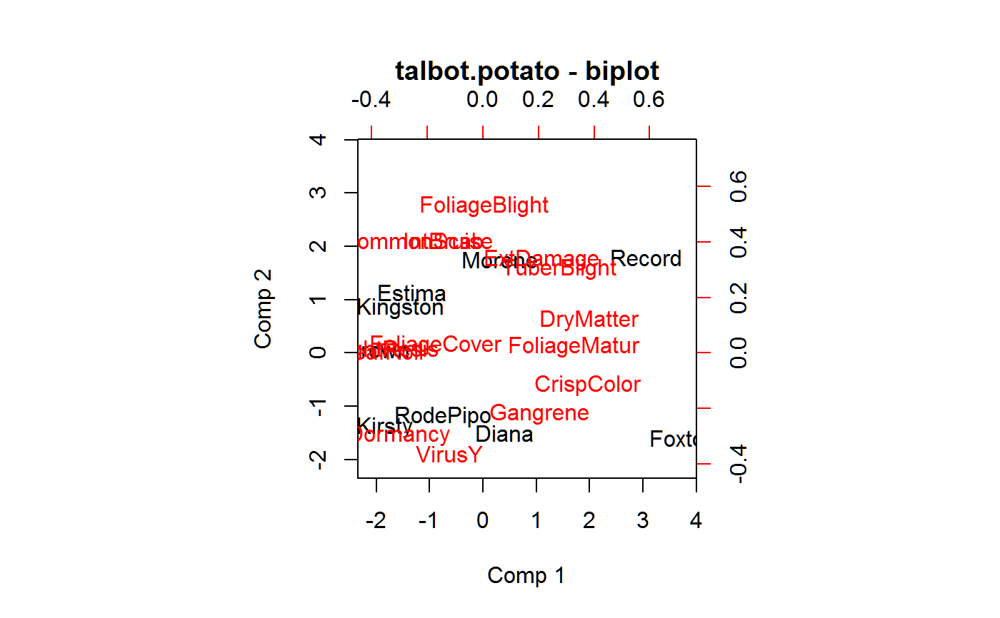

talbot.potato.RdYield and 14 trait scores for each of 9 potato varieties at 12 locations in UK.
data("talbot.potato.traits") data("talbot.potato.yield")
The talbot.potato.yield dataframe has 126 observations on the following 3 variables.
gengenotype/variety
traittrait
scoretrait score, 1-9
The talbot.potato.yield dataframe has 108 observations on the following 3 variables.
gengenotype/variety
loclocation/center
yieldyield, t/ha
The talbot.potato.yield dataframe contains mean tuber yields
(t/ha) of 9 varieties of potato at 12 centers in the United Kingdom
over five years 1983-1987. The following abbreviations are used for
the centers.
| BU | Bush |
| CA | Cambridge |
| CB | Conon Bridge |
| CC | Crossacreevy |
| CP | Cockle Park |
| CR | Craibstone |
| GR | Greenmount |
| HA | Harper Adams |
| MO | Morley |
| RO | Rosemaund |
| SB | Sutton Bonnington |
| TE | Terrington |
Mike Talbot and A V Wheelwright, 1989, The analysis of genotype x analysis interactions by partial least squares regression. Biuletyn Oceny Odmian, 21/22, 19--25.
Used with permission of Mike Talbot.
library(agridat) libs(pls, reshape2) data(talbot.potato.traits) datt <- talbot.potato.traits data(talbot.potato.yield) daty <- talbot.potato.yield datt <- acast(datt, gen ~ trait, value.var='score') daty <- acast(daty, gen ~ loc, value.var='yield') # Transform columns to zero mean and unit variance datt <- scale(datt) daty <- scale(daty) m1 <- plsr(daty ~ datt, ncomp=3) summary(m1)#> Data: X dimension: 9 14 #> Y dimension: 9 12 #> Fit method: kernelpls #> Number of components considered: 3 #> TRAINING: % variance explained #> 1 comps 2 comps 3 comps #> X 34.75196 51.176 69.43 #> BU 23.45729 43.184 50.67 #> CA 17.43483 54.890 58.94 #> CB 43.53317 62.991 76.86 #> CC 68.01120 82.451 82.99 #> CP 48.47678 49.634 89.26 #> CR 67.06064 71.160 83.44 #> GR 0.03819 36.128 39.76 #> HA 61.84794 87.342 87.49 #> MO 61.46510 65.841 65.84 #> RO 20.82397 27.029 46.44 #> SB 16.47977 27.939 29.75 #> TE 6.32481 9.181 22.36#> Comp 1 #> DryMatter -0.38 #> CrispColor -0.38 #> FoliageMatur -0.33 #> TuberBlight -0.27 #> ExtDamage -0.21 #> Gangrene -0.20 #> FoliageBlight -0.01 #> VirusY 0.12 #> IntBruise 0.13 #> FoliageCover 0.17 #> CommonScab 0.25 #> Dormancy 0.30 #> LeafRoll 0.36 #> DroughtResis 0.41